Đây là các phần được cắt từ ảnh bạn cung cấp, chưa phải bộ SVG hoàn chỉnh. Viền cắt còn cần kiểm tra; các phần bị che trong ảnh chưa được dựng lại. Nền caro biểu thị vùng trong suốt.
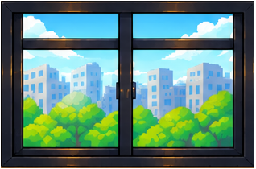
Cửa sổ
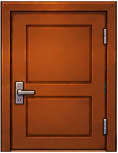
CửaCông tắc
Giường trái — ghép lớp nháp
Giường phải — ghép lớp nhápThanh bên trong giường tráiThanh bên trong giường phảiThanh bên giường tráiThanh bên giường phảiThanh sau giường tráiThanh sau giường phải
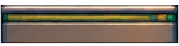
Thanh trước giường trái
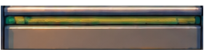
Thanh trước giường phảiCột trong giường tráiCột trong giường phảiCột giường trái — dựng chân bị cheCột giường phải — dựng chân bị cheCột giường trái — còn bị cheCột giường phải — còn bị cheGối trái — còn bị cheGối phải — còn bị che
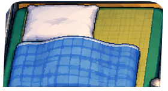
Nệm và chăn trái — bản nháp
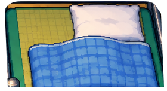
Nệm và chăn phải — bản nhápCầu thang trái — dựng phần bị cheCầu thang phải — dựng phần bị cheCầu thang trái — còn bị cheCầu thang phải — còn bị che
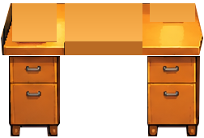
Bàn trái — ghép lớp nháp
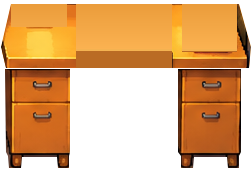
Bàn phải — ghép lớp nhápMặt bàn trái — dựng phần bị cheMặt bàn phải — dựng phần bị che
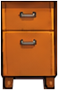
Ngăn bàn trái — phía ngoài
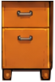
Ngăn bàn trái — phía trong
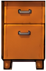
Ngăn bàn phải — phía ngoài
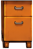
Ngăn bàn phải — phía trong
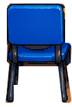
Ghế trái
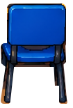
Ghế phảiBa lô tráiBa lô phảiĐèn trái — còn bị che
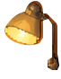
Đèn phải — còn bị cheLaptop trái — dựng cạnh bị cheLaptop phải — dựng cạnh bị che
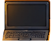
Laptop trái — còn bị che
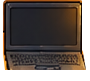
Laptop phải — còn bị cheSách tráiSách phảiCây tráiCây phải
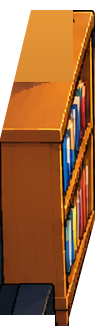
Kệ trái — dựng phần bị che
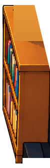
Kệ phải — dựng phần bị cheCây trên kệ tráiCây trên kệ phải